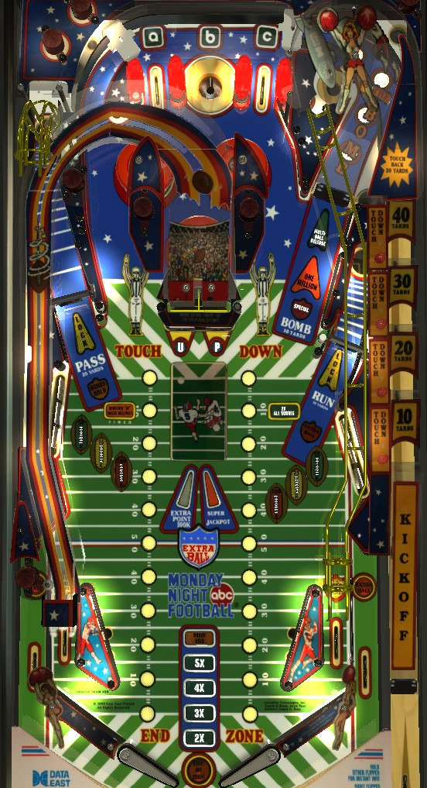

Sometimes referred to as "ABC Monday Night Football". This game has an alphanumeric display, and is not to be confused with other American football-themed games such as Touchdown (Premier Gottlieb, 1984) or NFL (Stern Pinball, 2001).
Try to always be in multiball. The spinner lanes on the sides of the table should always be flashing to lock a ball; if they are not, complete the nearby drop targets to qualify a lock. During multiball, shoot the two center standup targets to spell Up, then shoot up the raised center ramp for a super jackpot. Only one super jackpot per multiball. Most playfield features award Yards, indicated by white lights on the playfield; collect 100 Yards to score a touchdown and raise the center ramp. Loop the center ramp in this case as many times as possible for 100,000 points per shot and to light the right ramp for a one-time 1,000,000 shot.
The Skill Shot is a precise-power plunge into whichever of the four holes in the shooter lane is flashing. The holes are labelled 10, 20, 30, or 40 yards, from nearest to farthest. Making the flashing hole scores 100,000 points and an instant Touchdown regardless of its location. Making a non-flashing hole scores the indicated number of Yards as well as 1,000 points per gained Yard. A shot that is too strong anf goes past all the holes and comes down the right ramp scores 20 yards and 20,000 points.
The "top lanes" actually consist of a left and right top lane, with a center saucer between them. Make an unlit lane or saucer to light it. Lane change is available with both flippers, but both flippers rotate the lit lanes in the same direction. Completing the top lanes by lighting all three increases the bonus multiplier by 1x toward its maximum of 5x. Completing the top lanes 5 times on a single ball lights one of the out lanes for extra ball, alternating each time a flipper is pressed.
In single ball play if there are no timed features currently running, the B saucer scores Q-B Sneak, which will randomly award 10, 20, 30, 40, or 50 yards, or a "sack" (nothing).
In addition to the skill shot and Q-B Sneak described above, you can earn 10 yards from the right spinner lane; 20 yards from the left spinner lane; 30 yards from the Bomb right ramp; and 10 yards from lit in lanes, which alternate every time the flipper button is pressed. Collecting a total of 100 yards scores a Touchdown, worth 6 football points, and raises the center ramp, making it accessible for 30 seconds. If you shoot the center ramp within the time limit, you score 100,000 points and the "extra point" worth 1 football point. However, if you successfully make the extra point, keep comboing the center ramp from the left flipper until you miss. The ramp continues to be worth 100,000 points per shot until about 5 seconds pass without the ramp being made. Making two consecutive ramp shots lights the right Bomb ramp for 1,000,000 points for about 20 seconds; this 1,000,000-point ramp can be collected once per game. Making 7 consecutive center ramp shots awards Light Everything, which lights the left spinner lane for Bonus Hold, the right spinner lane for Extra Ball, and the right Bomb ramp for Special. The Special is timed, once again to about 20 seconds, but the bonus hold and extra ball stay lit until collected or until the ball ends. Making more ramps consecutively than anyone else has on the machine sets the Loop Record, which scores 500,000 points and allows you to enter your initials at the end of the game.
If you have collected 70, 80, or 90 yards out of the current set of 100, an insert labelled "Shooting Up Raises Goalpost" will light. Hitting the two center standup targets to spell Up will raise the center ramp for a Field Goal for 30 seconds. Making the Field Goal scores 50,000 points and 3 football points. You can continue comboing this ramp for 50,000 points per shot until you miss, but you cannot qualify the 1,000,000-point ramp or Light Everything in this way.
Football points are only used to light other features on the table. Depending on operator settings, Bonus Hold will be lit at the left spinner somewhere between 3 and 14 football points; Extra Ball will be lit at the right spinner somewhere between 15 and 35 football points; and Special will be lit at the Bomb ramp at somewhere between 36 and 81 football points. If special is lit by collecting enough football points, it will not have a timer tied to it, and stays lit until collected. The game stops keeping track of football points at 99; your total football points are tracked throughout the game. The only way to light Bonus Hold, Extra Ball, or Special outside of the football points requirements is to score Light Everything from seven consecutive shots to the center ramp following a touchdown, or from Super Jackpot awards in multiball discussed below. Football points never correspond to pinball points, even at the very end of the game.
Yards are the end of ball bonus. One advance, or 10 yards, is worth 1,000 points in end-of-ball bonus. It is possible to collect more than 1,000 yards; I suspect that the limit is 2,000, allowing for a maximum end of ball bonus of 5x 200,000 = 1,000,000 points, which was standard in other Data East games at the time, but I have not confirmed this for certain.
On default settings, locks are always lit at the left and right spinner lanes. A flashing lock light means a ball can be locked at that lane; a solid lock light means a ball has already been locked there. If the lock light is completely unlit, that means the game is on hard settings, and you must clear the bank of drop targets closest to the spinner lane in order to qualify the lock. After locking a ball in both saucers, shoot the right Bomb ramp to release both balls and start multiball. Locks can be stolen in a multiplayer game.
In multiball, the one and only goal is to score a Super Jackpot. Hitting the two Up targets in the center of the playfield opens the center ramp, and making the center ramp within 15 seconds scores the super jackpot. Only one super jackpot is available per multiball. The current super jackpot award is flashing on the backglass, and rotates one position to the right each time any drop target bank is completed. From left to right, the possible awards are:
The awards that are purely points hold much more value than the others, so try to complete drop target banks until the super jackpot would be worth at least 1,250,000 points.
In multiball, shooting the right spinner lane starts 2x playfield scoring for 20 seconds. I do not believe that 2x playfield can be applied to super jackpot scoring. It may be able to be applied to the million ramp, though.
One of the two banks has a flashing light. Complete the flashing bank to score and advance the flashing value in the sequence 50,000 - 75,000 - 100,000 points. After clearing a bank 3 times, all 3 inserts will flash, and completing that bank again scores an extra ball. After the extra ball has been collected, all three inserts in front of the drop target bank will be solidly lit, and any further completions of this bank score only 25,000 points. Clearing a bank of drop targets that has no flashing light and does not have all 3 lights solidly lit will score 25,000 points and move the flashing light to the bank that you just completed.
Monday Night Football has a conventional in/out lane setup. In lanes are always lit alternately for 10 yards, using the flipper buttons. Out lanes are lit alternately for Extra Ball only if the current player reaches the final ball of their game with a score of 500,000 points or less; the out lane extra ball is also moved with the flippers.
See the Top Lanes and Yards sections.
In competition/novelty play, specials can be set to a point value, though I am not sure how many points. 1,000,000 seems like it would be a fair amount. I am not aware of any setting that assigns a point value to extra balls.